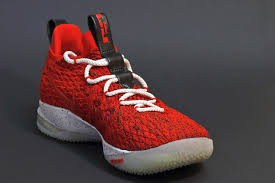
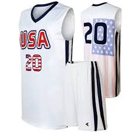
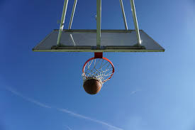
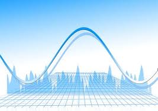

Cambios tecnológicos
Calzado
Además de buscar los materiales más ligeros para que la deportiva pese lo menos posible y permita una mayor movilidad al jugador, en este deporte, las articulaciones de las piernas sufren bastante por la gran cantidad de saltos y choques que se desarrollan durante el partido. Estos choques y saltos pueden provocar lesiones bastante graves a los jugadores, para ello las diferentes marcas, están fabricando un calzado ligero para favorecer la movilidad junto con tecnología Hyperfuse, la cual se encarga de ofrecer un ajuste más personalizado del calzado con el pie, para prevenir lesiones causadas al saltar o correr.
Equipación
La estética principal de la equipación que usan siempre ha sido la misma (pantalón corto y camiseta de tirantes), lo que ha cambiado ha sido el tamaño. Hace varios años, el pantalón era bastante corto y la camiseta estaba ajustada al cuerpo del jugador, lo cual permitía moverse pero en algunas ocasiones le causaba dificultades por el pequeño tamaño. Actualmente, las marcas deportivas han ampliado el tamaño del pantalón y de la camiseta, de esa forma los jugadores pueden seguir teniendo movilidad pero en ningún momento se van a sentir incómodos porque el uniforme les quede demasiado justo.
Cámaras/ojo de halcón
Este tipo de cámaras se encuentran colocadas a lo largo de toda la cancha, además, cabe destacar que en las canastas también están conectadas para poder ver lo que sucede en el aro y alrededor de este para ayudar a las decisiones arbitrales. Estas cámaras se encargan de grabar todas las jugadas desde diferentes ángulos y son procesadas a través de una serie de ordenadores en los que se encuentran otros jueces a la misma altura de la cancha. En el caso de que alguno de los árbitros no tenga muy clara la acción a pitar después de la jugada, podrán acudir a visualizar la jugada desde diferentes ángulos y a una velocidad mucho más lenta, lo cual les permitirá tomar la decisión correcta. En especial, las cuatro cámaras que se encuentran conectadas en las canastas, permiten ver si el balón ha pasado del aro o se ha cometido un tapón ilegal.
Software
Al igual que en el fútbol y en otros muchos deportes, todo lo que está sucediendo en un partido es grabado por múltiples cámaras y estas envían los datos a diferentes ordenadores para que los procesen. Estos datos son las estadísticas, sin las cuales no nos podríamos imaginar un partido de baloncesto. Un ejemplo creado por la Federación Española de Baloncesto es Smarts Stats el cual tiene interfaz Windows y sirve para ver y transmitir los datos de una forma más visual y fiable gracias a su capacidad de sincronización de datos. Estos datos mediante diferentes softwares son enviados a diferentes usuarios, entre ellos los clubes para que también los puedan procesar. Si quieres obtener más información sobre este software pincha aquí.